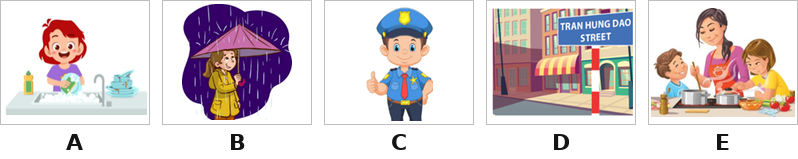
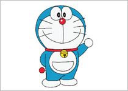
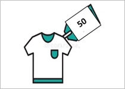
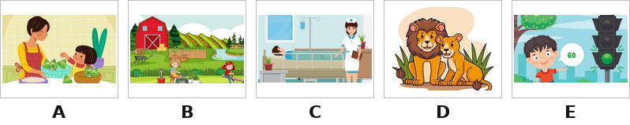
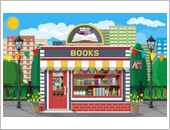

Thời gian: 35 phút. Còn 10 phút hệ thống nhắc; hết giờ có thêm 5 phút gia hạn rồi tự động nộp.
Bài làm ở chế độ toàn màn hình. Chuyển tab, mất focus, thoát toàn màn hình đều bị ghi nhận và báo cho giáo viên.
Không dùng chuột phải, sao chép/dán, phím tắt. Đáp án và giải thích chi tiết hiển thị sau khi nộp bài.
Đã nghe: 0/3 lần. Số lần nghe tối đa: 3.
Question 1. Listen and number (nghe và đánh số). (Ví dụ: câu 0 – tranh B.)

1
Nghe câu số 1: câu đó ứng với tranh nào?
2
Nghe câu số 2: câu đó ứng với tranh nào?
3
Nghe câu số 3: câu đó ứng với tranh nào?
4
Nghe câu số 4: câu đó ứng với tranh nào?
Question 2. Listen and tick or cross (nghe, tranh đúng thì tick ✓, sai thì cross ✗).
5

Nghe câu số 1: nội dung nghe có khớp với tranh không? (True = tick ✓, False = cross ✗)
6
Nghe câu số 2: nội dung nghe có khớp với tranh không? (True = tick ✓, False = cross ✗)
7

Nghe câu số 3: nội dung nghe có khớp với tranh không? (True = tick ✓, False = cross ✗)
8
Nghe câu số 4: nội dung nghe có khớp với tranh không? (True = tick ✓, False = cross ✗)
Question 3. Listen and tick true or false (nghe và chọn đúng/sai).
9
My brother has small eyes.
10
I clean the floor at night.
11
She goes to the sports center on Saturdays.
12
The hat is ninety-nine thousand dong.
Question 4. Read and match (đọc và nối câu với tranh). Ví dụ: “Where do you live? – I live in a village.” → B.

13
Nối (chọn đáp án đúng cho từng dòng):
Does she work at a hospital? – No, she doesn’t. She works at a nursing home.→
What do you do in the evening? – I help my mother with the cooking.→
What does it say? – It says “GO”.→
What animals do you like? – I like lions because they roar loudly.→
Question 5. Read and choose A, B or C (đọc và chọn đáp án đúng).
14
What does your mother ____________? – She is tall and slim.
15
My father wants some grapes and beans. He goes to the _____________.
16
Why do you like birds? – Because they ________________.
Question 6. Read and tick True or False (đọc đoạn văn, chọn đúng/sai).
Today is Sunday. The weather is windy. We are at the water park in the morning. My brother and I go swimming in the swimming pool. In the afternoon, we go on a picnic. My father will help my mother with cooking. But it is rainy, we must come back and watch films at home.
Ví dụ: “Today is Friday.” → False.
17
The weather is windy and sunny.
18
My brother and I go swimming.
19
We watch films at home because it is rainy.
Question 7. Reorder the letters to make a word (sắp xếp chữ cái thành từ, nhìn tranh). Ví dụ: s T i t r h → T-shirt.
20
c o p i e l a n m →
21

k o p s o b o h →
22
i l c o d e r c o →
23
d o u c l y →
Question 8. Reorder the words to make complete sentences (sắp xếp từ thành câu đúng).
24
Sắp xếp thành câu đúng:
25
Sắp xếp thành câu đúng:
26
Sắp xếp thành câu đúng:
27
Sắp xếp thành câu đúng:
Question 9. Answer the questions with the given words (trả lời bằng từ cho sẵn). Ví dụ: What does his father do? (factory worker) – He’s a factory worker.
28
What’s the weather like today? (sunny and windy)
29
How can I get to the cinema? (go straight, turn right)
--:--
Bắt đầu làm bài kiểm tra
Nhập thông tin để hệ thống ghi nhận kết quả.
Nhắc giờ
⏰ Đã hết giờ làm bài
Bạn có thêm 5 phút để hoàn tất. Hết 5 phút bài sẽ tự động nộp.
⚠ Bạn đã thoát toàn màn hình
Hành vi này đã được ghi nhận. Hãy quay lại chế độ toàn màn hình để tiếp tục làm bài.